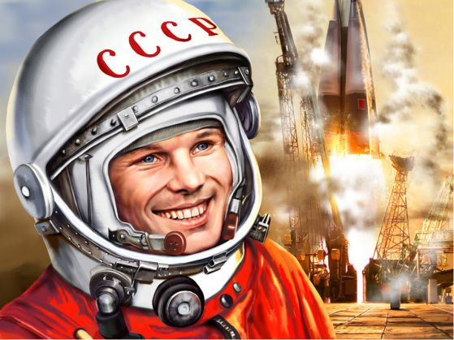
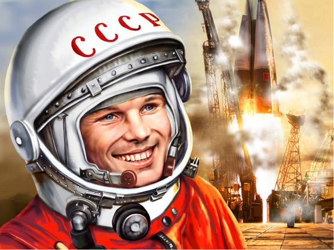

Юрий Гагарин
 

Юрий Гагарин е първият човек, летял в космосът. Той е руснак. Роден е на 9 март 1934 в село Клушино, близо до град Гжатск (днес в Гагарински район, Смоленска област, Русия). Живее в семейсво Гагарини, с баща Алексей Иванович Гагарин (1902-1973 г.) и майка Анна Тимофеевна Матвеева (1903-1984 г.). На 3 март 1960 г. със заповед на главнокомандващия на ВВС Константин Вершинин е зачислен в групата на космонавтите. На 11 март започва тренировки. Отначало групата е от 20 млади летци. Ръководител на космическата програма е Сергей Корольов. От тях са отделени 6, които са подготвяни по програма, различна от останалите. Четири месеца преди полета е взето решение той да бъде първият космонавт. Негов дубльор е Герман Титов. На 12 април 1961 г. в 9 часа и 7 минути (6 часа и 7 минути по Гринуич) московско време Гагарин излита от космодрума Байконур на космическия кораб „Восток 1“ с ракета носител Р-7. Първите му думи в открития Космос са „Поехали !“. Корабът прави една обиколка около Земята, с продължителност 108 минути и се насочва за приземяване в Саратовска област. Приземяването е успешно извършено близо до спускаемия апарат. В орбита Гагарин провежда обикновени експерименти – яде, пие, води записки с молив. Случайно забелязва, че след като остави молива до себе си, той започва да се издига и да „плува“, от което прави извода, че предметите в космоса е по-добре да се връзват или закрепят по някакъв начин. Всички свои наблюдения и чувства той записва на бордов магнетофон. По онова време не се знае как такъв полет може да окаже влияние на психиката на космонавта, затова ръчното управление може да се включи само след въвеждане на специален код, запечатан в плик. В края на полета спирачната система сработва нормално и успешно, но с недобър импулс и 10 минути преди навлизане в атмосферата корабът започва да се върти безпорядъчно със скорост 1 оборот в секунда. Гагарин решава да не плаши ръководителя на полета. Когато корабът навлиза в по-плътните слоеве на атмосферата, съединителните кабели прегарят, а командата за отделяне постъпва от термодатчиците и спускаемият апарат се отделя от двигателния апарат. Траекторията е балистична, което създава около 8-10 пъти натоварване (8-10 пъти земното ускорение), но Гагарин има подготовката и е готов за това. По-тежко е психическото натоварване. В атмосферата капсулата се загрява и външната температура достига 3000-5000°C, по стъклата започват да се стичат струи разтопен метал, а самата кабина започва да се тресe. В съответствие с плана на 7 километра височина Гагарин катапултира, като и капсулата, и той започват да се спускат с отделни парашути. При спускането в херметическия скафандър на Гагарин не се задейства веднага клапанът, който следва да пропусне въздух, и космонавтът едва не се задушава. Последният проблем на този полет се оказва мястото на приземяване, което е могло да стане в ледените води на Волга, но благодарение на много добрата си подготовка, Юрий Гагарин успява да направлява парашута и да се приземи на 1-2 километра от брега. ЧСлед една пълна обиколка на Земята, в 10:55:34 часа, след 108 минути, корабът завършва полета. Поради проблемите, апаратът се приземяване на предвиденото място – 110 километра от Сталинград, а в Саратовска област, недалеч от село Смеловка. Първите, които посрещат космонавта на земята, се оказват жената на местния лесничей Ана Тахтарова и нейната шестгодишна внучка Рита. Скоро на мястото пристигат военните от местната дивизия и колхозници. Военните отвеждат Гагарин и от гарнизона той се обажда по телефона, за да съобщи за успешното си приземяване.